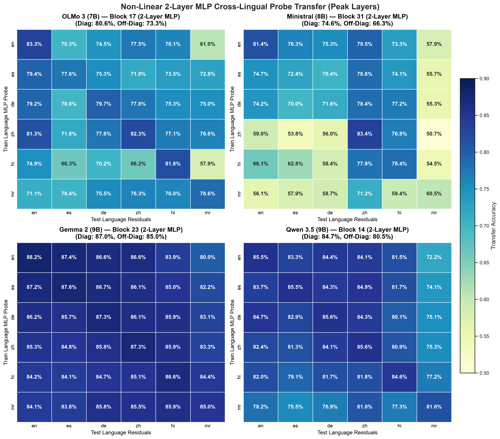
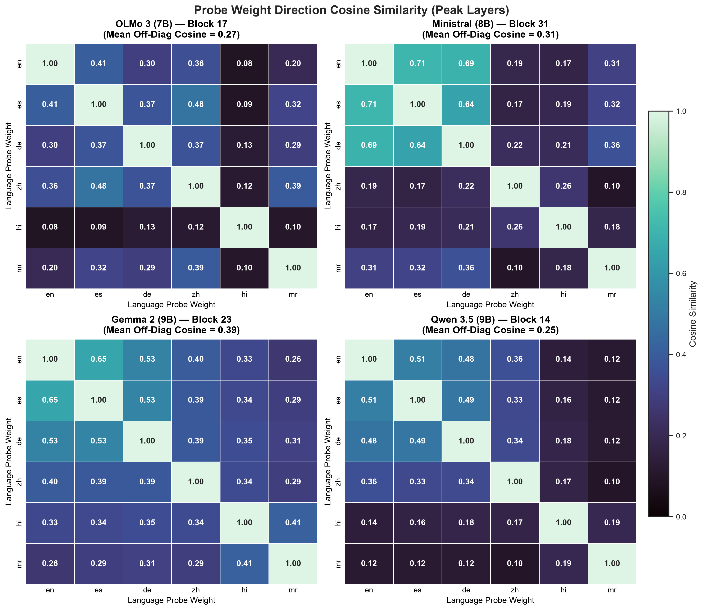
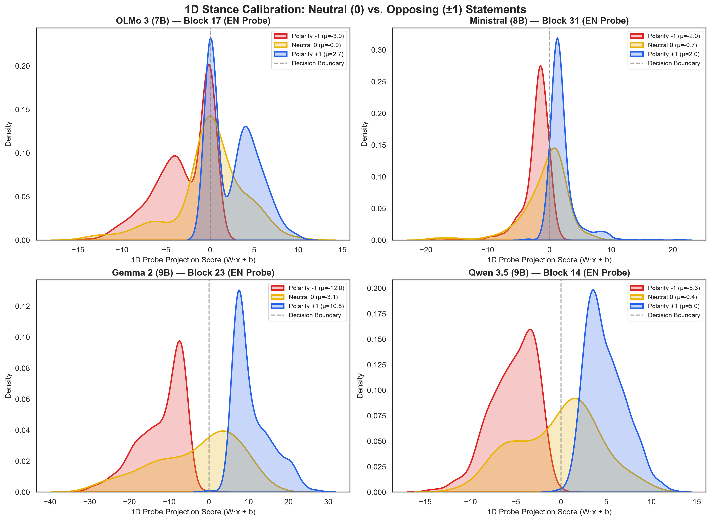
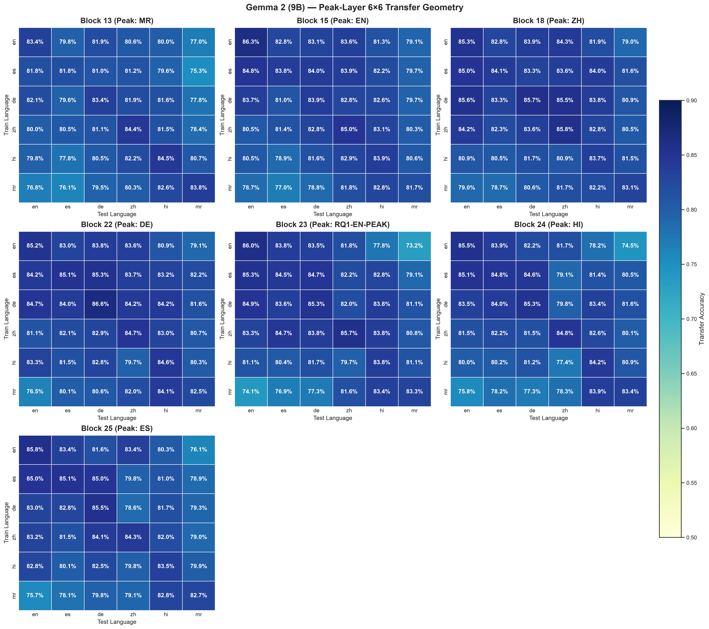
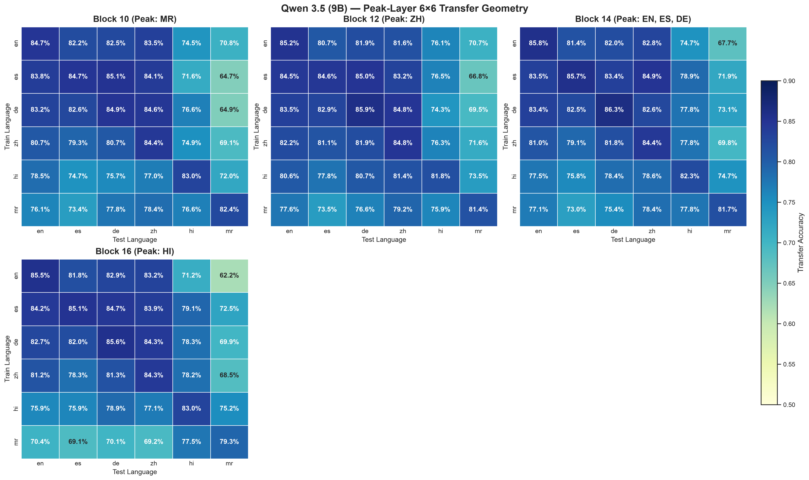
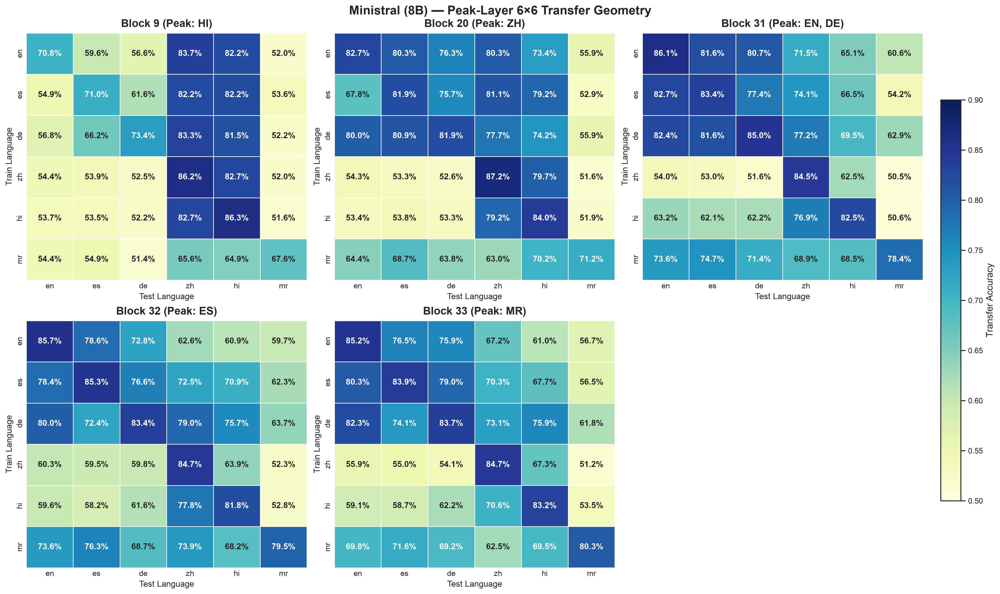
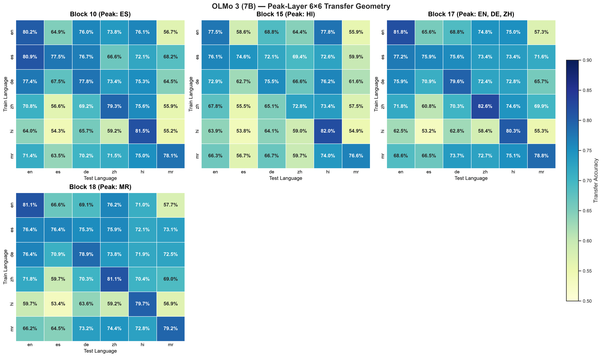
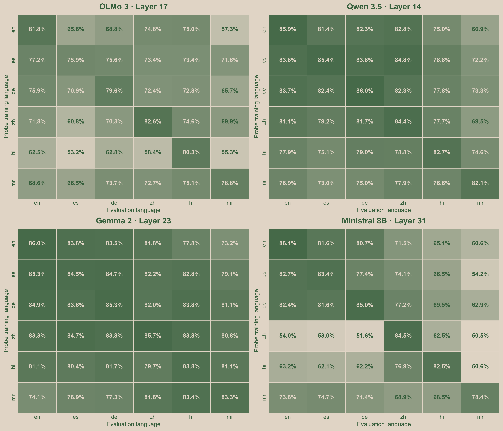
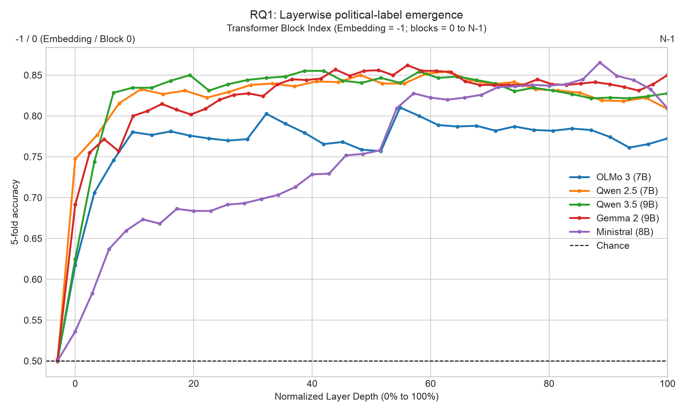
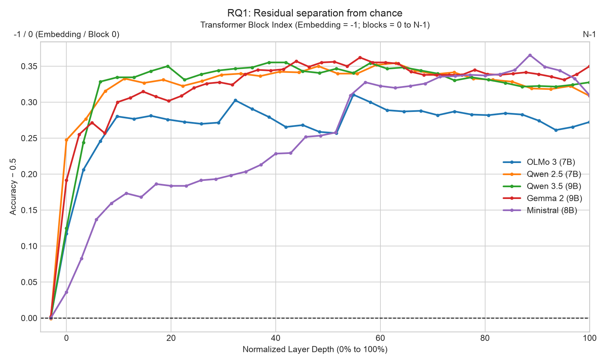

Testing whether cross-lingual transfer failure is linear-only or structural. A 2-layer MLP boosts Gemma 2 off-diagonal transfer to 85.0%, but completely fails to fix Ministral's cross-script collapse (Chinese on English is 59.0%, on Marathi is 50.7%), proving linguistic isolation is structural.

Direct cosine similarity between learned probe weight vectors across all 15 language pairs. Confirms high directional alignment in Gemma 2 (mean 0.39) vs. isolated orthogonal directions in Ministral (0.10 on cross-script pairs).

Held-out neutral statements (label = 0) naturally project near zero (the decision boundary), while positive (+1) and negative (-1) statements separate into clean symmetric modes.

Full 6×6 transfer matrices evaluated at each language's native peak decodability layer, deduplicating when languages share a peak block.
Consistently high transfer across all language depths (80–82% off-diagonal mean), proving that the universal semantic subspace spans the entire middle network.

Symmetric cross-lingual transfer across its middle layers (77–78% off-diagonal mean), with Marathi consolidating earliest at Block 10.

Persistent linguistic fragmentation across all depths: testing at Hindi (Block 9) or Chinese (Block 20) native peaks does not resolve cross-lingual transfer collapse.

Block 17 anchors EN, DE, and ZH simultaneously with optimal transfer (68.9% off-diagonal mean); earlier layers show weaker global transfer.

Transfer accuracy for every Train Probe → Test Residual pair at each model's primary RQ1 English peak layer.

Hover any of the 36 markers for source probe, target residuals, accuracy, and layer. Use the dropdown to switch models. Z-axis starts at the 50% chance level.
Political stance is chance-level (~50%) at the embedding layer, crystallizes in the middle residual stream, and drops slightly in final layers. Consistent across all 5 models tested.

Positive vs negative statement projections overlap completely at Layer 0 and split into clean bimodal distributions at peak layers.
